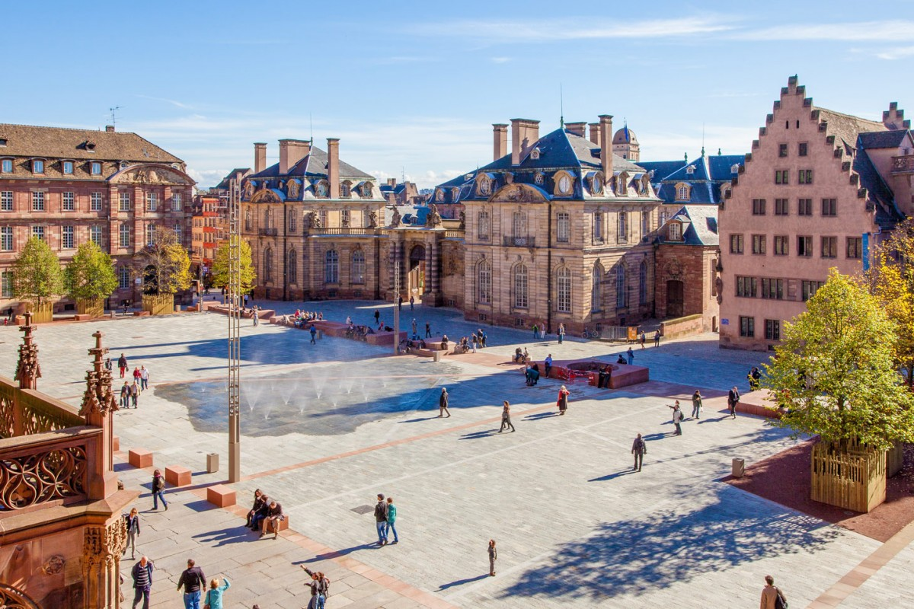
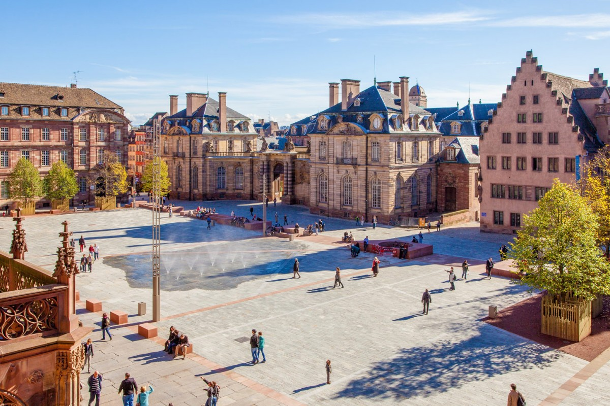

Strasburg
Willkommen in Strasburg
„Carrefour de l'Europe“ - Schnittpunkt Europas, so wird Straßburg in Werbeprospekten genannt. Ein Kreuzpunkt ist die Stadt in der Tat.
Hier fühlt man sich beim Espresso im Boulevardcafé ganz wie in Frankreich und im Gasthaus bei einem Schoppen Wein oder einem frisch gezapften Bier - fast - wie zu Hause. Deutsche und Franzosen, unter deren Herrschaft Straßburg (frz.: Strasbourg) abwechselnd stand, haben die Stadt geprägt. Heute begegnen sich in Straßburg neben Tausenden von Touristen auch regelmäßig Politiker aus Europa, denn seit 1949 ist die Elsassmetropole Sitz des Europarats. Außerdem ist Straßburg Tagungsort des Europaparlaments der EU, das sich hier zu seinen monatlichen Plenarsitzungen trifft. Dann reisen mehr als 2000 Abgeordnete, Parlamentsangestellte und Dolmetscher an, belegen die Hotels und bevölkern die Restaurants.
Nicht alle der 28000 hier lebenden Ausländer (von denen die Türken mit 14000 die größte Gruppe bilden) sind so wohl gelitten wie die Beamten des Europarats oder die Europaabgeordneten: Bei Wahlen verbuchen der rechtsextremistische französische Front National und sein regionaler Ableger L'Alsace d'abord („Das Elsass zuerst“) in Straßburg und Umgebung regelmäßig mehr als zehn Prozent der Stimmen. Ihr gutes Abschneiden verdanken sie vor allem der wachsenden Angst vieler Franzosen um ihre Ruhe und Sicherheit - und Straßburg macht da keine Ausnahme. Die wohlhabende, bürgerlich geprägte Elsassmetropole sorgt nämlich immer wieder für Schlagzeilen. In einigen Problemvierteln am Rand der Stadt grassieren Arbeitslosigkeit und soziale Ausgrenzung. Immer häufiger entladen sich in diesen Plattenbaughettos Spannungen und Frustrationen in gewaltsamen Ausschreitungen.
Straßburg ist stolz auf seine Geschichte, gibt sich aber gleichzeitig resolut modern. So bemüht sich die Stadt um den Ausbau ihres Technologiezentrums, wo inmitten von Hightechunternehmen die International Space University künftige Weltraumspezialisten ausbildet. Seit sich 2009 die drei Straßburger Universitäten zusammenschlossen, besitzt die Elsassmetropole die mit 41000 Studenten und über 5000 Dozenten größte Hochschule Frankreichs. Ein denkmalgeschütztes Gebäude im historischen Viertel Petite France beherbergt außerdem die berühmte Eliteverwaltungshochschule ENA. Mehrere sehenswerte Museen, die Rheinoper und das Théâtre National de Strasbourg sowie renommierte Festivals machen Straßburg auch zu einem Zentrum für Kultur. Außerdem ist die Europastadt Sitz des Kulturkanals Arte.
Sehenswertes vor Ort
-
Sasbachwalden
Sasbachwalden: Bezauberndes Blumen- und Weindorf im Schwarzwald Im Naturpark Schwarzwald Mitte/Nord inmitten herrlicher Reblandschaft liegt die Ferienregion Sasbachwalden, welche sich von 172 bis 1.164 Metern ü.d.M. in herrlicher Panoramalage eine einmalige Aussicht ins nahe gelegene Rheintal bietet. Von hier aus erreicht man bequem bekannte Ziele wie Baden-Baden, Straßburg und Freiburg. Als eine der schönsten Gemeinden im Schwarzwald, ist es kein Wunder, dass Sasbachwalden bereits bei drei Wettbewerben mit der Goldmedaille ausgezeichnet als Bundessieger hervorging. Vielseitig und abwechslungsreich ist das Freizeitprogramm: das traditionelle Winzerfest im Oktober und das kulinarische Sommerfest sowie kulturelle Veranstaltungen der Spitzenklasse. Für Erholung in Sasbachwalden ist bestens gesorgt. So verfügt das vollkommen industriefreie Dorf über wissenschaftlich nachgewiesene hervorragende Klimaeigenschaften und exzellente Luftreinheit. Sehenswürdigkeiten der Region, wie z.B. eine alte Weintrotte aus dem 16. Jahrhundert, die romantischen Gaishöll-Wasserfälle, die Burgruine Brigittenschloss oder auch das Turenne-Museum in Sasbach-Obersasbach, runden einen gelungenen Aufenthalt in der Ferienregion ab. Über 40 gastronomische Betriebe, von der urigen Wein- und Vesperstube über das gutbürgerliche Landgasthaus bis hin zum Michelin-Stern gekrönten Spitzen-Restaurant, kümmern sich gekonnt um das leibliche Wohl des Gastes. Flanieren Sie auf der Badischen Genussmeile und genießen Sie zum guten Essen den preisgekrönten Wein der Lagen "Alde Gott" und „Schelzberg“.
-
Gemeinde Appenweier
Appenweier, Nesselried und Urloffen Ortenau - Mittlerer Schwarzwald, Elsass - Paris - Straßburg Appenweier, Nesselried und Urloffen laden ein zu malerischen Wanderungen in die Schwarzwaldhöhen von 147m bis 392m - für Familien genauso wie für Geübte. Über das nahegelegene Oberkirch führen Wanderwege in das Renchtal bis Bad Peterstal-Griesbach auf die Routen des Schwarzwaldvereins. Wandern, Mountainbike, Motorbike oder Roadster. Die Schwarzwaldhochstraße ist Ziel für Motorradfahrer und Sonnenanbeter sowie Ausgangsort für Gebirgsradler. Etliche Touristenrouten zeigen die Facetten von Folklore und Natur der beliebten Ferienregion. Kulinarische Küchen, ruhige Übernachtungen und traditionelles, gastfreundschaftliches Leben machen die Gemeinde zu einem beliebten Aufenthaltsort. Urloffen ist für seinen Meerrettich bekannt, Nesselried für seine Weine und Obstbrände. Nur 24 Minuten sind es ohne Umsteigen vom Appenweierer Bahnhof zum Hauptbahnhof und zum Straßenbahnnetz der Europastadt Straßburg. Außerdem ist Appenweier mit der Bahn über Karlsruhe, Baden-Baden, Freiburg, Offenburg ideal erreichbar. Durch den TGV-Halt in Straßburg ist selbst ein Tagesausflug in die Metropole Paris nicht ausgeschlossen (2:20 Stunden einfach).
-
Palais de l'Europe
Der Palast mit schräg emporstrebenden Wänden ist Sitz des Europarats. Dahinter befindet sich das Gebäude des Europ. Gerichtshofs für Menschenrechte. Am gegenüberliegenden Illufer wurde der Neubau für das Europaparlament eingeweiht. Der futuristische Bau ist bereits eine neue Touristenattraktion.
-
Musees du Château des Rohan
Im direkt an der Ill gelegenen ehemaligen Bischöflichen Palais aus dem 18. Jh. sind drei Museen untergebracht: das Musée Archéologique, das Musée des Arts Décoratifs (Kunstgewerbemuseum) und das Musée des Beaux-Arts.
-
Place de la République
Die Kolossalbauten des Platzes sind heute zum größten Teil Verwaltungsgebäude. Hier steht das beeindruckendste Denkmal der Stadt: Eine Mutter, die Straßburg symbolisiert, hält ihre beiden im Ersten Weltkrieg gefallenen Söhne in den Armen - einer starb für Frankreich, einer für Deutschland.
-
Terrasse Panoramique
du Barrage VaubanDas Vauban-Wehr mit seinen 13 Schleusentürmen wurde vom Festungsbaumeister Ludwigs XIV. als Teil eines Befestigungsgürtels gebaut, der Straßburg uneinnehmbar machen sollte. Seit 1967 dient es als Panoramaterrasse, von der aus man über Petite France und das Münsterviertel blickt.
-
Cour du Corbeau
Hinter einem unscheinbaren Eingang verbirgt sich der Rabenhof - ein malerischer, von mittelalterlichen Fachwerkhäusern mit offenen Holzgalerien gesäumter Innenhof. Davor liegt der Pont du Corbeau, von dem aus im Mittelalter Verbrecher, in Säcke eingenäht, in die Ill geworfen wurden.
-
Ancienne Douane
In dem "Alten Kaufhüs" an der Rabenbrücke wurden im Mittelalter Waren gelagert. Das Gebäude wurde im Zweiten Weltkrieg zerstört und 1956 originalgetreu wieder aufgebaut. Heute beherbergt es ein Restaurant mit Terrasse zu Ill sowie Galerieräume, in denen oft interessante Ausstellungen zu sehen sind.
-
Maison Kammerzell
Mit seiner prachtvollen, mit zahlreichen symbolhaften Holzschnitzereien verzierten Fachwerkfassade ist es das wohl meistfotografierte Patrizierhaus Straßburgs. Heute beherbergt das 1467 erbaute und 1571 vom damaligen Besitzer, einem reichen Kaufmann, erweiterte Gebäude ein Restaurant.
-
Parc de l'Orangerie
Straßburgs schönster Park mit Kinderspielplätzen, einem kleinen Tiergehege, einer Storchenaufzugsstation und einem See (Bootsverleih). Im Pavillon Josephine finden im Sommer häufig Konzerte statt. Ein Café mit Terrasse bietet sich für eine kleine Pause an.
Entdecken Sie die Schönheit Strasburgs


 
